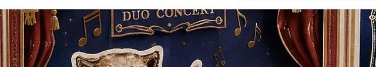
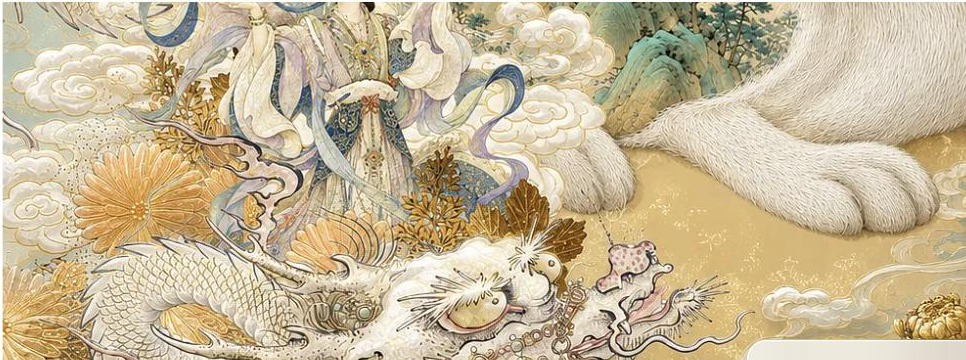
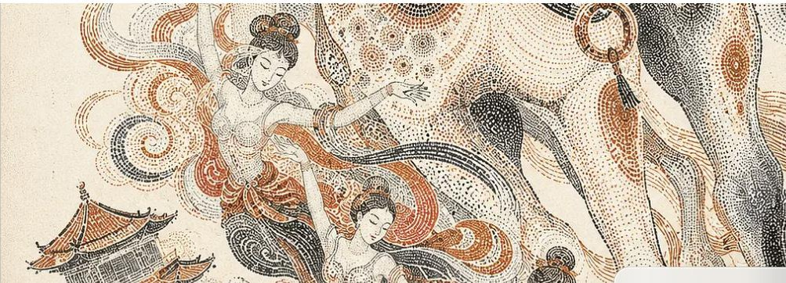
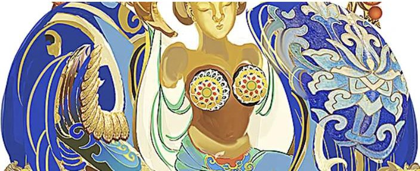
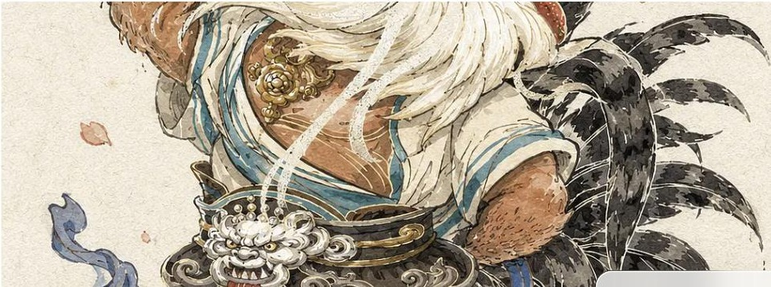
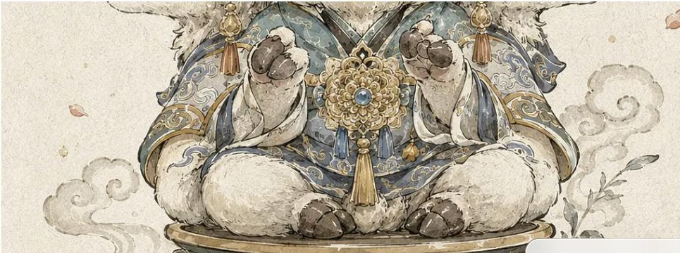
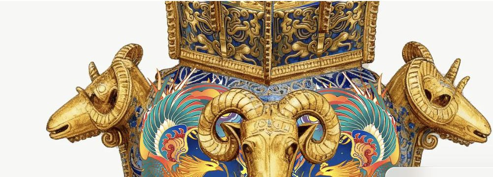
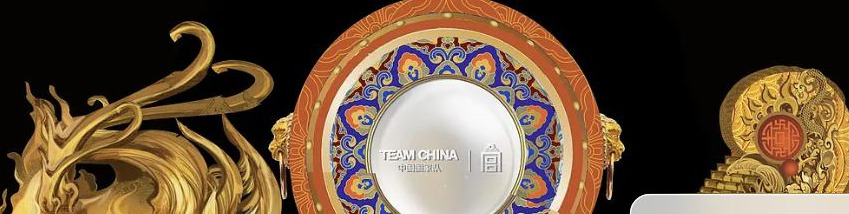
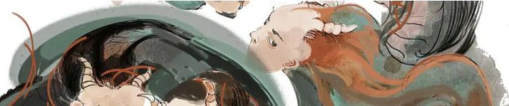
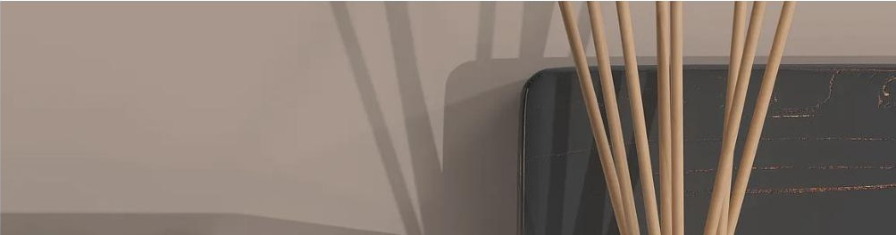

1 视觉基因
金色点缀 · 高密度装饰宫廷华服中的动物华丽装饰边框
景泰蓝 / 工笔技法插画与产品设计双线并行
2 作品实证
基于 10 件公开作品进行整理与分析，于 2026-08-22 采集，涵盖潮玩 IP、商业插画、中国传统文化插画、传统工艺再创作与包装设计等多个领域。

hjx_01潮玩·高原三傻 原始作品

hjx_02中秋节插画 原始作品

hjx_03马年的创作 原始作品

hjx_04景泰蓝星座 原始作品

hjx_05生肖毛绒玩具 原始作品

hjx_06三羊开泰 原始作品

hjx_07四羊方尊 原始作品

hjx_08故宫收藏 原始作品

hjx_09创世山海经 原始作品

hjx_10香薰产品设计 原始作品
3 色彩语言
金色在 10 件作品中的 6 件里稳定出现，作为统一的高级感点缀色，无论具体技法如何变化。在工艺再创作类作品中，高饱和度的景泰蓝蓝与金色搭配使用。以下色卡为基于截图的近似视觉取色，并非声称的实际生产用色。
4 字体与排版
舞台剧场式字体
英文标题字体（"DUO CONCERT"）置于华丽的幕布与金色边框造型之中。
hjx_01
印章式标题图形
标题以做旧红色印章的形式呈现，而非普通字体排版。
hjx_09
5 构图体系
生成图示 — 10 件作品的构图模式归纳，非原始作品图像
舞台叙事场景
hjx_01、02、09
单主体居中肖像
hjx_04、05、06、07
简约产品实拍场景
hjx_10
6 造型与图形语言
华丽的装饰性边框反复出现在主体形象周围——幕布/舞台边框、圆形勋章式边框、纹样盘边（hjx_01、04、08）。下图为对反复出现的圆形勋章式边框元素的抽象归纳，非原始作品图像。
7 图像风格 / 插画技法
技法跨度宽广且富有章法：精细的工笔线描（hjx_02）、敦煌风格点彩/点画技法（hjx_03，仅此一例）、景泰蓝/珐琅工艺质感表现（hjx_04、07）、水彩水墨角色插画（hjx_05、06），以及更为松弛的水墨笔触（hjx_09）——此外还展现出独立于插画之外、已得到印证的真实产品摄影能力（hjx_10）。在所有插画类作品中，装饰密度始终保持在较高水平。
7b 角色IP与文化产品语言
- 角色IP语言：生肖/地域动物被赋予庄重的角色人格，而非泛化的吉祥物形象（01、05、06）。
- 面部/形体风格化：柔和、圆润、大眼睛，气质温和而非凶猛——即便是守护神兽类角色也是如此（01、05、06）。
- 传统纹样：龙、凤、云纹、波浪、仙鹤等图案反复出现（02、04、07、08）。
- 装饰密度：在几乎所有插画样本中都维持较高水平，而非偶尔点缀。
- 叙事性构图：舞台场景、神话群像、节庆场景等叙事性画面出现的频率，高于单纯的肖像构图。
- 纹样/织物转译：景泰蓝与工笔的表面纹样呈现出类似织物/刺绣的装饰效果（02、04、07）。
- 潮玩/文创产品转译：同一套“华服拟人化”视觉语言，可延伸应用于海报、潮玩概念设计与博物馆级纪念品。
8 标志性视觉元素
金色点缀符号 高
金色线描/饰品/器物色贯穿于不同技法之中。
02,04,05,06,07,08(6件)
宫廷华服中的动物形象 高
长袍、镶玉配饰与礼仪感的庄重气质，而非泛化的吉祥物处理方式。
01,05,06(3件)
华丽装饰性边框 高
幕布/舞台、圆形勋章式边框或纹样边框环绕主体形象。
01,04,08(3件)
景泰蓝/珐琅工艺质感表现 中
以金色掐丝轮廓搭配高饱和度填色，用于文物再创作。
04,07(2件)
插画与产品设计双线能力 高（方法论）
以插画为主线，同时展现出真实产品摄影这一独立且已验证的能力。
全部10件
敦煌点彩技法 低
陶土色点彩渲染，营造出敦煌壁画般的质感。
仅03
松弛水墨笔触 低
用于神话群像场景的松弛水墨笔触。
仅09
9 宜与忌
宜
- 在高级感/文化类角色或器物类作品中，优先使用金色作为点缀色
- 为拟人化动物角色搭配宫廷华服，并赋予温和圆润的表情
- 在主视觉/肖像类作品中使用华丽装饰边框
- 针对文物/非遗类项目，专门采用景泰蓝风格的渲染方式
- 将产品摄影视为一项独立且同样专业的能力
忌
- 不要假设存在单一固定的插画技法——已观察到至少 4 种不同风格
- 不要过度断言点彩（见第8节）或水墨（见第8节）风格已成为稳定特征——两者目前均仅有 1 件作品支撑
- 不要将潮玩/毛绒玩具类作品误认为量产实物照片——它们均为插画概念设计
10 生成指南
写给下游生成智能体（AI 绘图/设计工具）的建议
- 首先判断项目需求属于角色 IP 类处理，还是产品摄影类处理——两者都是已验证的真实能力。
- 如为角色类项目，应为主体赋予宫廷风格的华服（长袍、镶玉配饰）以及温和圆润、大眼睛的表情。
- 无论最终选择何种具体渲染技法，均应默认以金色作为统一的高级感点缀色。
- 针对文物类或博物馆合作类项目，采用景泰蓝风格的金色掐丝轮廓搭配高饱和度填色。
- 在主视觉/肖像类构图中使用华丽装饰边框（幕布、勋章式边框、纹样边框）；在场景类或产品实拍类作品中则不建议使用。
- 不要强行套用单一标志性插画风格——应根据项目具体的文化题材，选择合适的技法（工笔、点彩、景泰蓝、水墨等）。
11 实证与置信度
| 元素 | 作品编号 | 置信度 |
|---|
| 金色点缀符号 | 02,04,05,06,07,08 | 高（6件） |
| 宫廷华服中的动物形象 | 01,05,06 | 高（3件） |
| 华丽装饰性边框 | 01,04,08 | 高（3件） |
| 景泰蓝/珐琅工艺质感表现 | 04,07 | 中（2件） |
| 插画与产品设计双线能力 | 全部10件 | 高（方法论） |
| 敦煌点彩技法 | 03 | 低（1件） |
| 松弛水墨笔触 | 09 | 低（1件） |